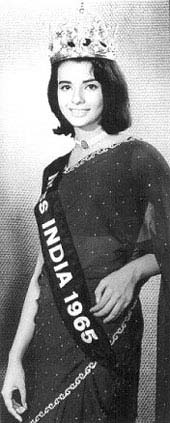
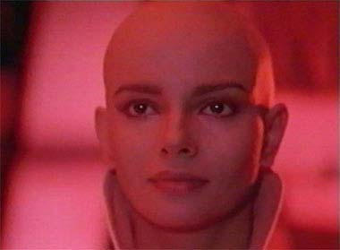
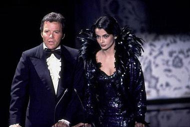

|

Publicado originalmente
em 7 de janeiro de 2002
|
Conhea Persis "Ilia" Khambatta   Roddenberry a contratou para fazer parte do elenco fixo da nova srie de Jornada, Fase II. Persis interpretaria uma nova personagem, a navegadora Ilia, oriunda do planeta Delta. A srie foi cancelada, mas o episdio-piloto transformou-se no primeiro filme de Jornada para o cinema, e Persis Khambatta estava nele. A personagem ainda ganhou uma histria prvia, envolvendo seu romance com o primeiro-oficial da nave, Willard Decker, interpretado por Stephen Collins. Porm, para viver Ilia, Persis teve de raspar todo o seu cabelo, j que a personagem era careca. "Eu no tive problemas com isso", disse ela em uma entrevista. "Era parte do trabalho. Mas enquanto estavam cortando meu cabelo, pedi para que todos os espelhos fossem cobertos com jornal, para que eu no visse. Quando acabou, todos me olhavam com uma cara de espanto. Eu pensei 'meu Deus, ser que ficou to ruim assim?'. 'Tirem os jornais, tirem os jornais', eu disse, pois queria ver. Qual no foi minha surpresa ao notar que todos olhavam com espanto pois ficou muito bom! Eu adorei, ficou fabuloso." Persis, alm do novo visual, tambm gostou de seus companheiros no elenco. "Fiquei amiga de todos eles, George [Takei], Nichelle [Nichols], Majel Barrett, Jimmy Doohan... Ele me adotaram! Walter Koenig gostava de beijar minha cabea dizendo 'Purrr-sis. Purrr-sis...'" Em 1980 Persis apresentou, ao lado de William Shatner, a entrega de um prmio no Oscar daquele ano.  Depois de "Jornada nas Estrelas - O Filme", ela trabalhou em alguns pequenos filmes de Hollywood e do cinema europeu. Fez ainda participaes em sries como "MacGyver", em 1986, e "Lois e Clark", em 1993, dessa vez interpretando uma embaixadora indiana no episdio-piloto da srie. No final da dcada de 1980 Persis sofreu um problema cardaco. Em 1997 escreveu um livro chamado "Pride of India", que tratava de ex-Misses ndia. O livro foi dedicado Madre Teresa de Calcut e parte do valor dos royalties iria para os Missionrios da Caridade. Em uma segunda-feira, 17 de agosto de 1998, Persis Khambatta deu entrada no hospital South Moumbai de Bombaim queixando-se de dores no peito. Na manh seguinte ela morreria aos 49 anos, vtima de um fulminante ataque cardaco. Mas no sem antes ser imortalizada nos coraes de todos os fs de Jornada nas Estrelas. |